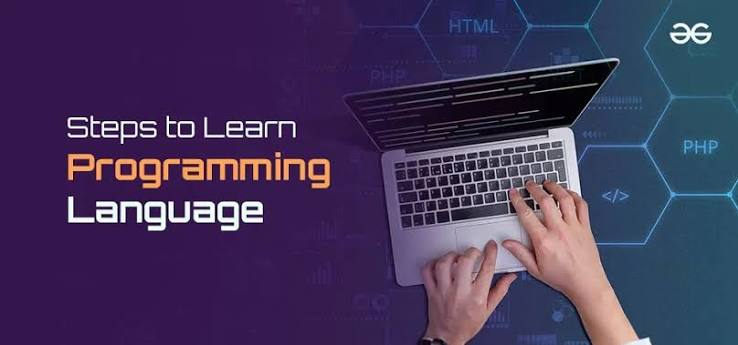
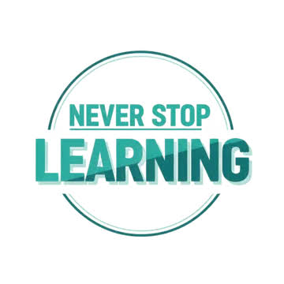

Programming is a great way to learn new things, develop your skills, and create something on your own. There are many programming languages, and each of them has different features and uses. Learning programming can help you understand how websites, applications, and different technologies work. If you are a beginner, you can start with the basics and slowly move on to more advanced topics. You can learn about languages like Python, Java, JavaScript, C++, and many others. With practice and patience, you can improve your knowledge and become better at coding. Sometimes programming can be challenging, but making mistakes is a normal part of learning. Every new thing you learn brings you one step closer to your goals. The most important thing is to stay curious, keep practicing, and never stop learning. Programming gives you the opportunity to be creative, solve problems, and turn your ideas into reality. So, take your first step into programming and start discovering all the things you can create with code!

Learning is something that never really ends because there is always something new to discover. When it comes to programming, I want to keep learning new things and improving my skills. There are many programming languages, tools, and technologies that I would like to explore in the future. I know that learning to code can sometimes be difficult, but I believe that with practice and patience, I can get better every day. I want to learn from my mistakes, try new things, and challenge myself to do better. Even if I don't understand something at first, I will keep trying until I learn it. My goal is to gain more knowledge, become better at programming, and use what I learn to create my own websites and apps. I believe that every new thing I learn can help me get closer to my dreams. For me, the most important thing is to never give up, stay curious, and never stop learning.
| Learning Habits | Why It Matters | My Goal |
|---|---|---|
| Learn Something New | Gain More Knowledge | Every Day |
| Practice Coding | Improve My Skills | Keep Practicing |
| Learn From Mistakes | Become Better | Never Give Up |
| Try New Things | Discover New Ideas | Keep Exploring |
| Stay Curious | Learn More Every Day | Never Stop Learning |
